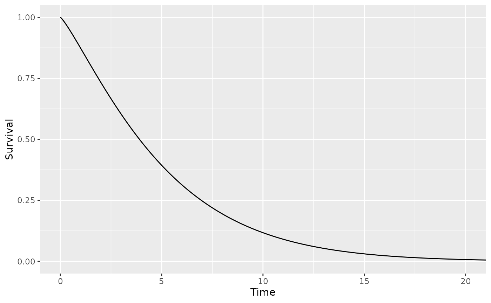

The herosurv package makes it easier to perform applied survival modeling in the context of Markov or partitioned survial models. This is accomplished by providing a series functions for defining survival distribution objects as well as a series of S3 methods that can operate on them. These S3 methods also include generics that provide support for survival distributions estimated from supported third-party packages (e.g. survival, flexsurv, flexsurvcure). All survival distribution functions, except those for generating predicted probabilities, return survival distribution objects allowing multiple function calls to be strung together.
Defining a Simple Survival Distribution
The herosurv package contains a number of functions for defining survival distributions of various types. For example, the define_surv_param function allows you to define a parametric survival distribution of a given family with given parameter values.
dist1 <- define_surv_param('weibull', shape = 1.2, scale = 5.3)More information on the kinds of survival distributions supported by herosurv can be found in the “Defining Survival Distributions” vignette.
Printing a Survival Distribution
Printing a herosurv survival distribution will provide a description of its contents.
dist1 <- define_surv_param('exp', rate = 0.013)
print(dist1)
#> An exponential distribution (rate = 0.013).Generating Survival Probabilities
Survival probabilities can be generated for a distribution using the surv_prob function.
dist1 <- define_surv_param('gompertz', shape = 0.5, rate = 0.03)
surv_prob(dist1, seq(from = 0, to = 20, by = 1))
#> [1] 1.000000e+00 9.618245e-01 9.020396e-01 8.114753e-01 6.815788e-01
#> [6] 5.112229e-01 3.181818e-01 1.455949e-01 4.011965e-02 4.790944e-03
#> [11] 1.441308e-04 4.466387e-07 3.263200e-11 4.943303e-18 2.820681e-29
#> [16] 8.178752e-48 2.234814e-78 9.091561e-129 7.561005e-212 0.000000e+00
#> [21] 0.000000e+00Plotting
Survival probabilities for a distribution can be graphed using the plot method.
dist1 <- define_surv_param('weibull', shape = 1.2, scale = 5.3)
plot(dist1, max_time = 20)
Modifying and Combining Survival Distributions
Survival distributions can be modified using a variety of functions provided by herosurv. For example, the apply_hr function can be used to apply a hazard ratio to a survival distribution.
dist1 <- define_surv_param('weibull', shape = 1.2, scale = 5.3)
dist2 <- apply_hr(dist1, 0.45)
print(dist2)
#> A proportional hazards survival distribution:
#> * Hazard Ratio: 0.45
#> * Baseline Distribution: A Weibull (AFT) distribution (shape = 1.2, scale = 5.3).It is also possible to combine multiple survival distributions into one. For example, the join function allows two survival distributions to be joined at the specified cutpoint.
dist1 <- define_surv_param('weibull', shape = 1.2, scale = 5.3)
dist2 <- define_surv_param('weibull', shape = 1.4, scale = 4.1)
dist3 <- join(dist1, 3, dist2) # Join dist2 and dist3 at time 3
print(dist3)
#> A joined survival distribution:
#> * Segment 1 (t = 0 - 3): A Weibull (AFT) distribution (shape = 1.2, scale = 5.3).
#> * Segment 2 (t = 3 - ∞): A Weibull (AFT) distribution (shape = 1.4, scale = 4.1).Composing Survival Distributions
More complicated survival distributions can be created by stringing together multiple herosurv operations. Use of the %>% operator from magrittr is supported.
# create an exponential distribution
dist1 <- define_surv_param('exp', rate = 0.04)
# create a survival distribution based on custom function
dist2 <- define_surv_func(function(t) pweibull(t, 1.2, 20.1, lower.tail = FALSE))
# create a Royston & Parmar spline model
dist3 <- define_surv_spline(
scale = 'hazard', # spline used to model log cumulative hazards
-2.08, 2.75, 0.23, # parameters
-1.62, 0.57, 1.191
)
dist4 <- dist1 %>% # take dist1
apply_hr(0.4) %>% # apply a hazard ratio of 0.4 to it
join(4, dist2) %>% # join it to dist2 at time 4
mix(0.25, dist3, 0.75) # mix the result with dist4 with weights of 25% and 75% respectively
print(dist4)
#> A mixed survival distribution:
#> * Distribution 1 (25%):
#> A joined survival distribution:
#> * Segment 1 (t = 0 - 4):
#> A proportional hazards survival distribution:
#> * Hazard Ratio: 0.4
#> * Baseline Distribution: An exponential distribution (rate = 0.04).
#> * Segment 2 (t = 4 - ∞): A survival distribution based on a custom function: function(t) pweibull(t, 1.2, 20.1, lower.tail = FALSE)
#> * Distribution 2 (75%): A Royston & Parmar spline model of log cumulative hazard with 3 knots (gamma = [-2.08, 2.75, 0.23], knots = [-1.62, 0.57, 1.19]).